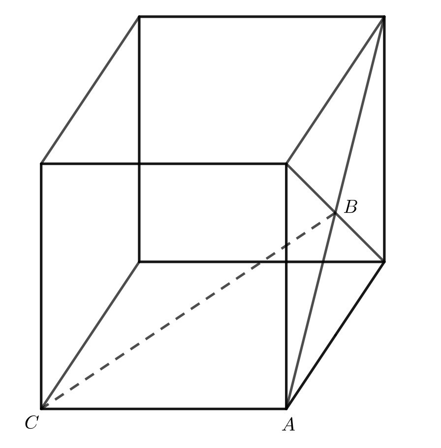
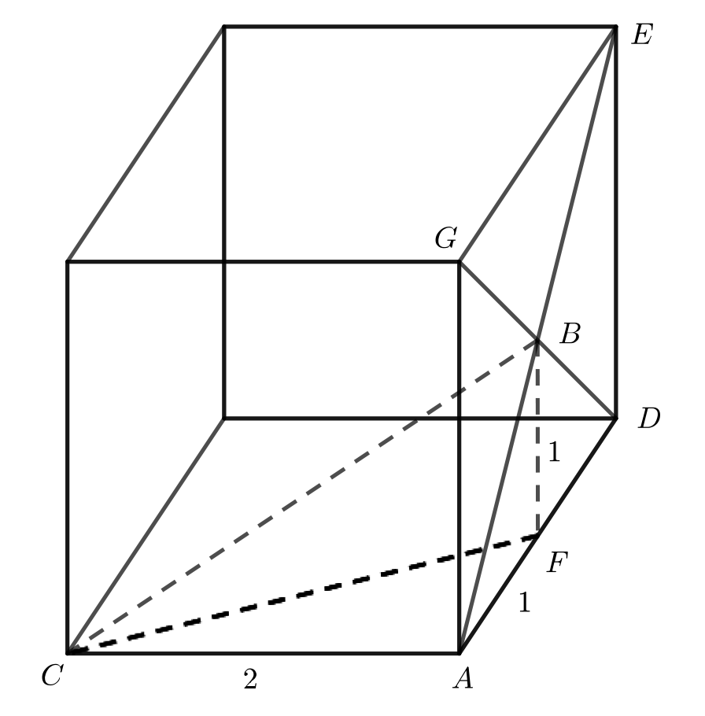
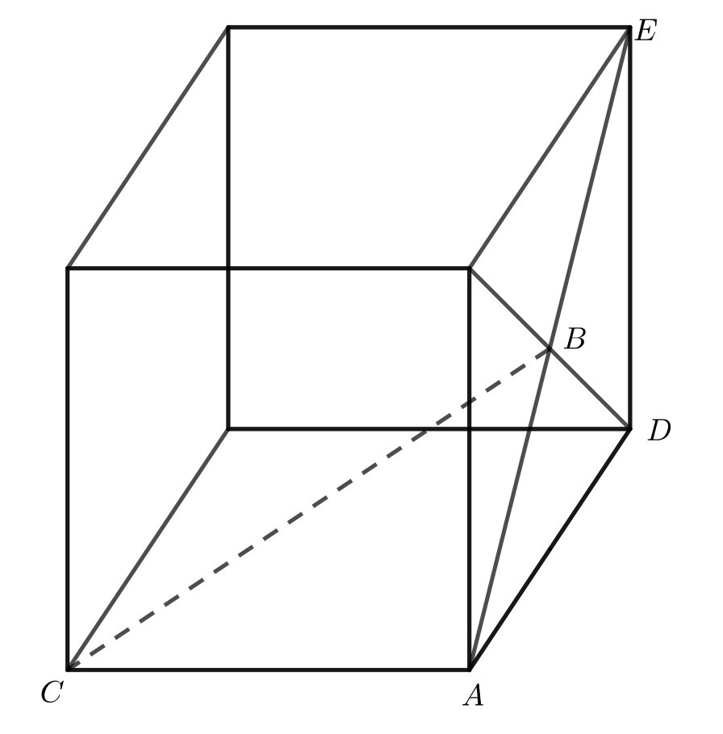

Problem of the Week
Problem D and Solution
To the Other Side
Points \(A\) and \(C\) are vertices of a cube with side length 2 cm, and \(B\) is the point of intersection of the diagonals of one face of the cube, as shown below. Determine the length of \(CB\).

Solution
Solution 1
Label vertices \(D\), \(E\) and \(G\), as shown.
Drop a perpendicular from \(B\) to \(AD\). Let \(F\) be the point where the perpendicular meets \(AD\). Join \(B\) to \(F\) and \(C\) to \(F\).
The faces of a cube are squares. The diagonals of a square meet at the centre of the square. Therefore, \(BF = 1\) and \(AF =1\).

Now, \(\triangle CAF\) is right-angled.
Using the Pythagorean Theorem in \(\triangle CAF\),
\(CF^2=CA^2+AF^2=2^2+1^2=5\).
Therefore, \(CF=\sqrt{5}\), since \(CF>0\).
Looking at \(\triangle CFB\), we know from above that \(CF~=~\sqrt{5}\) and \(BF=1\). We also know that \(\angle CFB = 90^\circ\).

Because of the three-dimensional nature of the problem, it may not be obvious to all that \(\angle CFB = 90^{\circ}\). To help visualize this, notice that \(CF\) and \(BF\) lie along faces of the cube that meet at \(90^{\circ}\).
Using the Pythagorean Theorem in \(\triangle CFB\), \(CB^2=CF^2+BF^2=\sqrt{5}^2+1^2=5+1= 6\). Since \(CB>0\), we have \(CB=\sqrt{6}\).
Therefore, the length of \(CB\) is \(\sqrt{6}\) cm.
Solution 2
Label vertices \(D\) and \(E\), as shown.

The faces of a cube are squares. The diagonals of a square right bisect each other. It follows that \(AB=BE=\frac{1}{2}AE\). Since the face is a square, \(\angle ADE=90^{\circ}\) and \(\triangle ADE\) is right-angled. Using the Pythagorean Theorem in \(\triangle ADE\), \(AE^2=AD^2+DE^2=2^2+2^2=8\). Since \(AE>0\), we have \(AE=\sqrt{8}\). Then \(AB=\frac{1}{2}AE=\frac{\sqrt{8}}{2}\).
Because of the three-dimensional nature of the problem, it may not be obvious to all that \(\angle CAB=90^{\circ}\). To help visualize this, note that \(\angle CAD=90^{\circ}\) because the face of the cube is a square. Rotate \(AD\) counterclockwise about point \(A\) on the side face of the cube so that the image of \(AD\) lies along \(AB\). The corner angle will not change as a result of the rotation, so \(\angle CAD=\angle CAB=90^{\circ}\).
We can now use the Pythagorean Theorem in \(\triangle CAB\) to find the length \(CB\). \[CB^2=CA^2+AB^2=2^2 + \left(\frac{\sqrt{8}}{2}\right)^2=4+\frac{8}{4}=4+2=6\] Since \(CB>0\), we have \(CB=\sqrt{6}\) cm.
Therefore, the length of \(CB\) is \(\sqrt{6}\) cm.
Note, we could have simplified \(AB=\frac{1}{2}AE=\frac{\sqrt{8}}{2}\) to \(\sqrt{2}\) as follows: \[\frac{\sqrt{8}}{2}=\frac{\sqrt{4 \times 2}}{2}=\frac{\sqrt{4} \times \sqrt{2}}{2}=\frac{2\sqrt{2}}{2}=\sqrt{2}.\] The calculation of \(CB\) would have been simpler using \(AB=\sqrt{2}\). Often simplifying radicals is not a part of the curriculum at the grade 9 or 10 level.